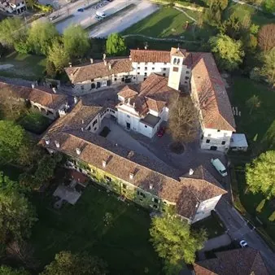

da ven 9 ott a dom 11 ott
Magici Intrecci Autunnali 2026
Magici Intrecci 2026: il fascino dell'autunno al Castello di Strassoldo di Sopra Dal 9 all'11 ottobre 2026 il Castello di Strassoldo di Sopra, in provincia di Udine, ospita la 55ª edizione di Magici Intrecci, la storica rassegna che da ventotto anni unisce alto artigianato…
 Indicazioni
Indicazioni
- Costi e prenotazioni
- Costo non indicato · Prenotazione non indicata
- Programma
- Programma da verificare. Apri la fonte ufficiale per orari e possibili aggiornamenti.
- In caso di maltempo
- Nessuna indicazione specifica pubblicata.
- Note
- Acquisito automaticamente dalla fonte.
L’EVENTO
Descrizione completa
Magici Intrecci 2026: il fascino dell'autunno al Castello di Strassoldo di Sopra Dal 9 all'11 ottobre 2026 il Castello di Strassoldo di Sopra , in provincia di Udine, ospita la 55ª edizione di Magici Intrecci , la storica rassegna che da ventotto anni unisce alto artigianato, cultura del verde e piccole produzioni agricole in uno dei più suggestivi complessi castellani privati del Friuli Venezia Giulia. Per tre giorni, circa 120 selezionati artigiani, vivaisti e produttori provenienti da tutta Italia presenteranno creazioni originali, piante rare e specialità di qualità lungo un percorso che attraversa gli eleganti saloni del castello, il parco secolare, i giardini, il brolo e gli antichi spazi della tenuta, impreziositi da raffinate decorazioni ispirate all'autunno. La manifestazione rappresenta anche un'occasione ideale per trovare regali di Natale unici e fatti con cura . Visitare Strassoldo in ottobre significa immergersi in un'atmosfera speciale, tra il foliage, le acque di risorgiva e un patrimonio storico custodito dalla stessa famiglia che fece edificare il castello oltre mille anni fa. Magici Intrecci non è soltanto una mostra-mercato, ma un evento che contribuisce concretamente alla conservazione e alla valorizzazione di questo straordinario complesso monumentale. Accanto all'esposizione saranno proposte numerose iniziative collaterali , tra cui visite guidate al borgo e al Parco del Castello di Sotto, incontri dedicati al giardinaggio e alla botanica, un'esposizione di galline ornamentali dedicata alla biodiversità e giochi tradizionali in legno per bambini e famiglie. Il programma completo sarà pubblicato sul sito del Castello un mese prima dell'evento. Informazioni utili Date: 9, 10 e 11 ottobre 2026 Orari e programma completo: disponibili sul sito ufficiale. Biglietti: venerdì €12; sabato e domenica €15. Bambini da 6 a 12 anni €6. Ingresso gratuito per bambini fino a 5 anni e persone con disabilità. Prevendita: disponibile online su Vivaticket. L'evento si svolge anche in caso di pioggia. Cani educati al guinzaglio sono i benvenuti. Saranno presenti punti ristoro con proposte stagionali. Partecipare a Magici Intrecci significa vivere un'esperienza tra storia, natura e creatività, contribuendo allo stesso tempo alla tutela di uno dei luoghi più affascinanti del Friuli Venezia Giulia.
IL PROGRAMMA
Programma e orari
Appuntamenti raccolti dalle fonti elencate. Dove manca un orario, non è ancora disponibile in questa scheda.
Programma pubblicato
- Dal 2026-10-09 al 2026-10-11
INFORMAZIONI UTILI
Prima di partire
- Controllare la fonte prima di partire.
ORGANIZZAZIONE